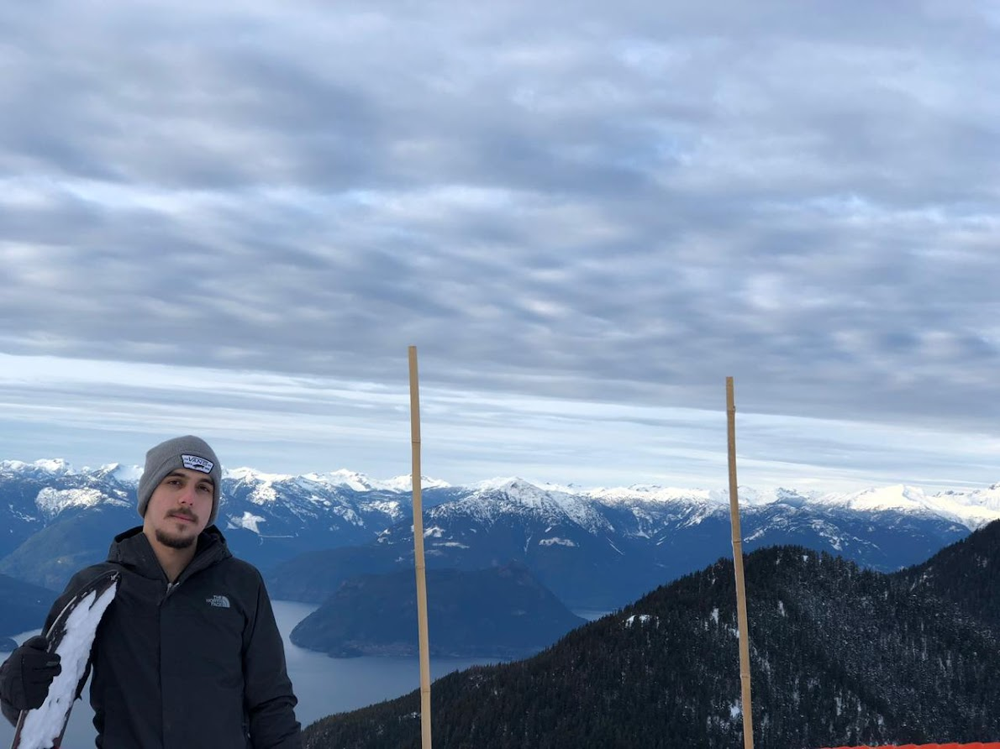

Ivan Diaz de Sandi Alvarez
About Me
My name is Ivan Diaz de Sandi Alvarez (people call me Ivan). I was born in Mexico but now live in Sydney, Australia. I’m employed as a driller and shotcreter. I love traveling, and my hobbies include learning new languages, playing video games, reading, and exercising.
Sydney, Australia
Sydney is famous for its beautiful harbour, iconic Opera House, and vibrant outdoor lifestyle. It’s a city where urban meets nature.